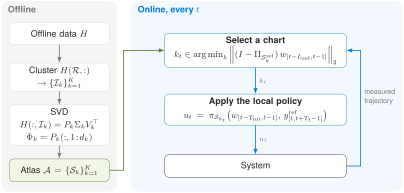
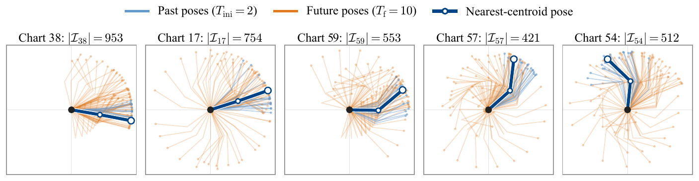
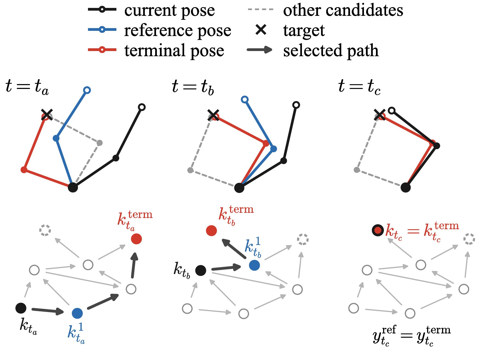

Atlas-DeePC: Learning Behavioral Atlases for Predictive Control
- arm
- predicted pose
- reference pose
- fingertip path
- target
- selected chart
- next-waypoint chart (guided only)
- goal chart
- target error
- reference error
- prediction error
- closed-loop path
- raceline
- reference horizon
- true speed / cross-track error
- reference speed
- ± RMSE
- warm-up
Atlas-DeePC replaces one global data matrix with an atlas of small local subspaces learned offline from data. Online, it picks the chart that matches recent measurements and solves a predictive control problem whose size depends on the chart's dimension, not on the size of the dataset.
- 98.8%
- success on 500 unseen Reacher targets with reference planning
- ~23 ms
- median online computation per step on an Apple M1 Pro, against 80 ms (Contextual-DPC) and 1.3 s (Select-DPC)
- 62
- trajectory coefficients per step, against 200 selected columns for the baselines
- 1.74 cm
- cross-track RMSE on a collision-free F1TENTH lap with measurement noise σ = 0.001
How it works

Method
DeePC represents a system by a single subspace of recorded trajectories. That representation is exact for linear systems but only locally accurate for nonlinear ones. Atlas-DeePC keeps the DeePC machinery and replaces the single subspace with an atlas of local ones.
Systems as sets of trajectories
In the behavioral approach, a system is identified with its behavior \(\mathcal{B}\): the set of all input–output trajectories \(w = (u, y)\) it can generate. Prediction over a horizon only needs the restricted behavior \(\mathcal{B}_L\), the set of all length-\(L\) trajectory segments. No state-space model is required.
Linear systems: one subspace from data
If the system is linear time-invariant with \(m\) inputs and order \(n\), then \(\mathcal{B}_L\) is a linear subspace of dimension \(mL + n\) (for \(L\) large enough). Arrange length-\(L\) windows of a recorded trajectory as the columns of a Hankel matrix \(H\). Then \(\operatorname{im} H = \mathcal{B}_L\) exactly when \(\operatorname{rank} H = mL + n\), so recorded data alone describe every trajectory of the system.
DeePC: predict with data, control in receding horizon
With \(L = T_{\text{ini}} + T_f\), DeePC asks the measured past and a candidate future to form one trajectory in \(\operatorname{im} H\):
Here \(u_{\text{ini}}, y_{\text{ini}}\) are the last \(T_{\text{ini}}\) measured inputs and outputs, and \(u^{\mathrm{f}}, y^{\mathrm{f}}\) the predicted next \(T_f\) steps. At every step DeePC minimizes a quadratic tracking cost over \(g\) (with a slack \(\sigma\) for noise) subject to input and output constraints, applies the first input, and repeats.
Why one subspace is not enough
For a nonlinear system, \(\mathcal{B}_L\) is generally not a linear subspace. Then \(\operatorname{im} H\) can contain combinations the system cannot produce and miss trajectories it can, so a prediction \(Hg\) need not be physically consistent. The cost also grows with the data: \(g\) has one entry per column of \(H\).
Atlas-DeePC addresses both. Offline, it splits the data into \(K\) groups and fits a low-dimensional subspace, a behavioral chart \(\mathcal{S}_k\), to each, so that every chart approximates \(\mathcal{B}_L\) near one operating region. Online, it selects the chart that best matches recent measurements and runs DeePC in it, with only \(d_k\) coefficients.
-
Build the behavioral atlas
Collect the length-\(L\) windows of all recorded episodes as the columns \(h_1, \dots, h_T\) of a mosaic Hankel matrix \(H\). A feature index set \(\mathcal{R}\) selects the rows of \(H\) that characterize the operating region, giving the feature vectors \(Z := H(\mathcal{R}, :) = [z_1 \cdots z_T]\). K-means on \(\{z_i\}\) partitions the columns into \(K\) clusters with index sets \(\mathcal{I}_1, \dots, \mathcal{I}_K\). For each cluster, the leading \(d_k\) left singular vectors of \(H(:, \mathcal{I}_k)\) give an orthonormal basis \(\Phi_k\) of the chart \(\mathcal{S}_k = \operatorname{im}\Phi_k\). The charts together form the atlas \(\mathcal{A} = \{\mathcal{S}_1, \dots, \mathcal{S}_K\}\).
Features are task-dependent. Reacher clusters on the arm configuration, the first four output components at sample \(T_{\text{ini}}\) (\(|\mathcal{R}| = 4\)); F1TENTH clusters on the vehicle speed at sample \(T_{\text{ini}}\) (\(|\mathcal{R}| = 1\)). -
Select a chart, then predict and control
At each step, compare the last \(L_{\text{sel}}\) measured samples with each chart. Restricting the basis to its first \(L_{\text{sel}}\) time steps gives \(\mathcal{S}_k^{\text{sel}} := \operatorname{im}\big(\Phi_k(1{:}(m+p)L_{\text{sel}},\, :)\big)\), and the chart with the smallest projection residual is selected:
\[k_t \in \operatorname*{argmin}_{k \in \{1,\dots,K\}}\ \big\|\big(I-\Pi_{\mathcal{S}_k^{\text{sel}}}\big)\,w_{[t-L_{\text{sel}},\,t-1]}\big\|_2\]Here \(\Pi_{\mathcal{S}_k^{\text{sel}}}\) is the orthogonal projector onto \(\mathcal{S}_k^{\text{sel}}\), and ties go to the smallest index. Reacher uses \(L_{\text{sel}} = L = T_{\text{ini}} + T_f\); F1TENTH uses \(L_{\text{sel}} = T_{\text{ini}}\).
Then solve the DeePC problem with the chart basis \(\Phi_{k_t}\) in place of \(H\):
\[\begin{aligned} \min_{g,\,\sigma,\,u^{\mathrm{f}},\,y^{\mathrm{f}}}\quad & (y^{\mathrm{f}} - y^{\text{ref}})^\top Q\,(y^{\mathrm{f}} - y^{\text{ref}}) + (u^{\mathrm{f}})^\top R\,u^{\mathrm{f}} + \lambda_{\text{ini}}\|\sigma\|_2^2 \\ \text{s.t.}\quad & \Phi_{k_t}\, g = \begin{bmatrix} u_{[t-T_{\text{ini}},\,t-1]} \\ y_{[t-T_{\text{ini}},\,t-1]} + \sigma \\ u^{\mathrm{f}} \\ y^{\mathrm{f}} \end{bmatrix}, \quad u^{\mathrm{f}} \in \mathcal{U}, \quad y^{\mathrm{f}} \in \mathcal{Y} \end{aligned}\]Here \(Q \succeq 0\), \(R \succ 0\), \(\lambda_{\text{ini}} \ge 0\), and \(\mathcal{U}, \mathcal{Y}\) are convex constraint sets. The predicted trajectory lies in the chart \(\mathcal{S}_{k_t}\), and \(g \in \mathbb{R}^{d_{k_t}}\). Applying the first optimal input \(u_t = u^{\mathrm{f},\ast}_t(1{:}m)\) and repeating at the next step defines the Atlas-DeePC policy
\[u_t = \pi_{\mathcal{S}_{k_t}}\big(w_{[t-T_{\text{ini}},\,t-1]},\ y^{\text{ref}}_{[t,\,t+T_f-1]}\big)\]The policy depends on \(\Phi_{k_t}\) only through the subspace \(\mathcal{S}_{k_t} = \operatorname{im}\Phi_{k_t}\), hence the notation. Selecting a chart takes about 0.2 ms.
On Reacher: \(T_{\text{ini}} = 2\), \(T_f = 10\), \(Q = I_{T_f} \otimes \operatorname{diag}(5 \times 10^{3} I_4,\, 20 I_2,\, 10^{5} I_2)\), \(R = 10^{-4} I_{mT_f}\), \(\lambda_{\text{ini}} = 10^{5}\), \(\mathcal{U} = [-1, 1]^{mT_f}\) and no output constraints. Each problem is a quadratic program solved with Clarabel.
Arm configurations sampled from five of the 64 Reacher charts. Each chart captures a coherent local motion. -
Graph-guided references
A far-away target may lie outside the region the current chart can represent. Chart-to-chart transitions seen in the offline data form a weighted directed graph, with edges weighted by the chordal distance between subspaces. The shortest path to the target's chart provides an intermediate reference, which is replanned whenever the active chart changes.

As the current chart changes (\(t_a \to t_c\)), the next chart on the shortest path supplies the reference (blue) until the terminal chart (red) is reached.
Numerical examples
Two simulated benchmarks: a nonlinear two-link manipulator reaching random targets, and a small autonomous race car tracking a raceline from noisy measurements. Every video replays a saved closed-loop run; no controller is rerun for display.
Gymnasium Reacher-v5 (MuJoCo): torque inputs on two revolute joints, an 8-dimensional output, and the task of driving the fingertip to a random target. Atlas: \(K = 64\) charts of rank \(d = 53\). Each video shows the arm with its one-step predicted pose and active reference, then the selected chart and the errors over time. Final errors are the mean fingertip error over the last 100 steps; videos play 5× slower.
Same task, with and without guidance
Same atlas, initial state and target, and both runs succeed. Left: fixed target reference. Right: graph-guided references. Time until the fingertip stays within 10 mm: 3.3 s → 1.3 s.
- arm
- predicted pose
- reference pose
- fingertip path
- target
- selected chart
- next-waypoint chart (guided only)
- goal chart
- target error
- reference error
- prediction error
Where graph guidance changes the outcome
Same atlas, initial state and target. Left: fixed terminal reference. Right: graph-guided references. Final error 377 mm → 1.85 mm. Over the 500 test runs with this atlas, guidance turns 36 failures into successes and 5 successes into failures (success rate 90.0% → 96.2%). In the failure shown, the arm stalls in an intermediate chart: the planned transition was seen in the offline data, but the closed loop cannot carry it out.
- arm
- predicted pose
- reference pose
- fingertip path
- target
- selected chart
- next-waypoint chart (guided only)
- goal chart
- target error
- reference error
- prediction error
F1TENTH Gym raceline tracking with nonlinear single-track dynamics at Δt = 0.1 s. Inputs are acceleration and steering; outputs are position, speed and heading, with Gaussian noise added to every measurement. A lap counts as a success when it is collision-free and the lateral error stays under 1 m throughout. No graph guidance is used here: references come directly from the raceline.
Full laps under measurement noise
σ = 0.001 · K = 12, d = 40 · RMSE 1.74 cm · collision-free lap, verified by replaying the applied inputs · real time
- closed-loop path
- raceline
- reference horizon
- true speed / cross-track error
- reference speed
- ± RMSE
- warm-up
Comparison with online data selection
Select-DPC and Contextual-DPC search the full dataset at every step for the data columns most relevant to the current state. Atlas-DeePC does that search offline, once, and works with a single low-dimensional chart online.
On Reacher, both baselines select 200 columns at every step. Atlas-DeePC is more accurate and much faster online.
Bars summarize the 500 Reacher test runs (seeds 10001–10500); whiskers mark the 95th-percentile computation time. Atlas-DeePC with \(p = 8\) uses \(K = 64\), \(d = 53\) without guidance and \(K = 96\), \(d = 57\) with guidance. The \(p = 10\) configuration (\(K = 64\), \(d = 62\)) augments the output with the absolute orientation of the second link and comes from Table 1 of the paper; its 95th-percentile time, not reported there, was computed from the same saved runs. Times pool every control step of the 500 runs except the first 5 of each run. Contextual-DPC uses the same fixed terminal references as unguided Atlas-DeePC. All runs on an Apple M1 Pro CPU.
On F1TENTH, Atlas-DeePC is compared with Contextual-DPC selecting 30, 60 or 90 columns per step, at seven measurement-noise levels on the same 20 test laps. Atlas-DeePC tracks within about 15% of the error of Contextual-DPC with 90 columns, while its median computation time stays below that of the 30-column version at six of the seven levels.
- Atlas-DeePC
- Contextual-DPC (30)
- Contextual-DPC (60)
- Contextual-DPC (90)
Collision-free laps (%)
Median cross-track RMSE (cm)
Median controller time (ms)
| Noise level σ | 0 | 0.1% | 0.25% | 0.5% | 1% | 2.5% | 5% |
|---|---|---|---|---|---|---|---|
| Chart count \(K\), rank \(d\) | 2, 42 | 12, 40 | 13, 42 | 14, 60 | 10, 44 | 3, 68 | 8, 72 |
The noise level σ is the standard deviation of the measurement noise added to each output channel, relative to that channel's scale; the same noisy offline data are used by both methods. Atlas-DeePC's chart count and rank are chosen per level on separate development laps (seeds 511–530) and fixed before testing. Results use 20 paired test laps per level (seeds 531–550). A lap succeeds if it is collision-free and its lateral error stays below 1 m throughout; RMSE is the median over successful laps, and a missing point means no lap succeeded. Controller time excludes the first five calls of each lap.
Citation
@article{jin2026atlasdeepc,
title = {Atlas-DeePC: Learning Behavioral Atlases for Predictive Control},
author = {Jin, Dian and Jin, Zhiyuan and Coulson, Jeremy},
year = {2026}
}